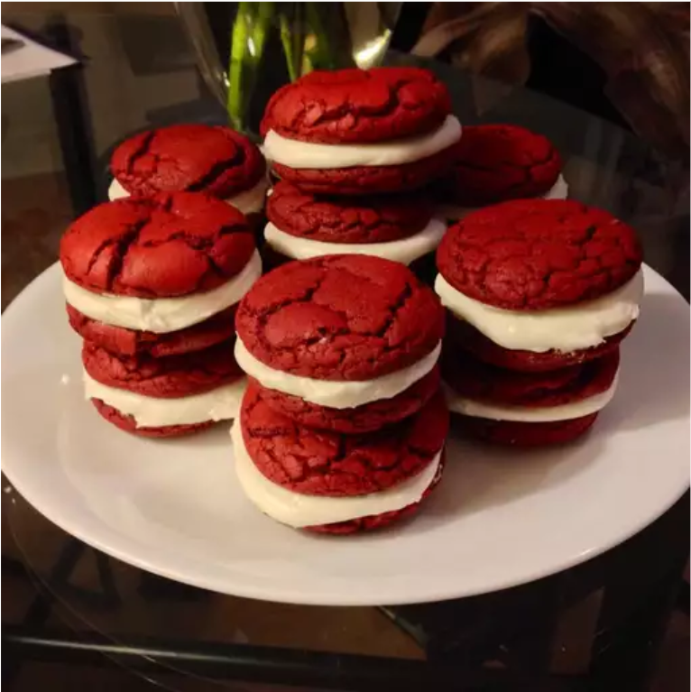

Home
Red Velvet Sandwich Cookies

Description
Red velvet cake is a must for the holidays. This year was so busy, that you didn't have time to make a cake? Whip up a batch of these cookies. They are out of this world! You don't just have to make them for holidays they are wonderful anytime!
Ingredients:
Red Velvet Cookies
- 1 (15.25 ounce) box red velvet cake mix
- 2 eggs, lightly beaten
- ½ cup vegetable oil
- 1 tablespoon bourbon
Cream Cheese Icing
- 1 (8 ounce) package cream cheese, softened
- ¼ cup butter, softened
- 2 teaspoons evaporated milk
- 1 teaspoon vanilla
- ½ cup flaked coconut
- 4 cups confectioners' sugar
- ½ cup chopped pecans
Steps
- Preheat the oven to 375 degrees F (190 degrees C).
- Mix together cake mix, eggs, oil, and bourbon in a large bowl. Roll the dough into balls the size of walnuts. Place 2 inches apart on ungreased baking sheets.
- Bake cookies in the preheated oven until the tops start to crack, about 8 minutes. Cool in the pans for 10 minutes before removing to cool completely on a wire rack.
- To make the icing: Combine cream cheese, butter, evaporated milk, vanilla, and coconut in a large bowl. Add confectioners' sugar, 1 cup at a time, mixing well with each addition. If consistency is too stiff, add more milk.
- Place the chopped pecans in a bowl. Spread a generous amount of icing on the bottom of a cookie, sandwich it with another cookie, pressing firmly so that the icing comes all the way out to the edge. Roll the edges of the sandwich cookies in the chopped pecans. Repeat with the remaining cookies.